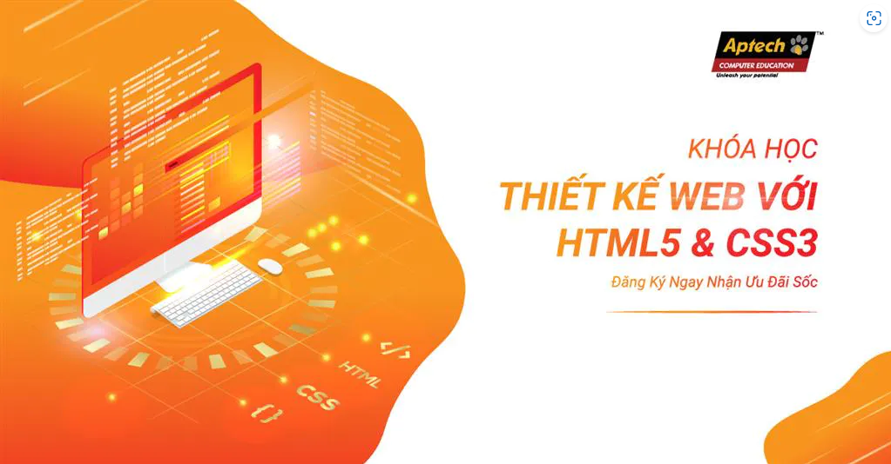

Năm 1991, trang web đầu tiên trên internet được hình thành bởi Tim Berners Lee và World Wide Web đã ra đời. Tim Berners Lee đã sử dụng HTML để viết nên các trang web và điều này giúp ông có thể chia sẻ dữ liệu với các nhà khoa học nội bộ. Bài viết này chúng ta sẽ tìm hiểu khái niệm HTML là gì và toàn bộ các nội dung liên quan đến HTML.
HTML là từ viết tắt của Hypertext Markup Language, là sự kết hợp của Hypertext và Markup, hay còn được gọi là ngôn ngữ siêu văn bản. HTML có chức năng giúp người dùng xây dựng và cấu trúc các phần trong trang web hoặc ứng dụng, thường được sử dụng trong phân chia các đoạn văn, heading, link, blockquotes,…
1. Phần mềm Notepad ++
Phần mềm Notepad++ là phần mềm miễn phí được nhiều người ưa chuộng với. Ưu điểm của phần mềm này chính là tạo ra môi trường lập trình nhỏ gọn, tiện lợi đi cùng với nhiều tiện ích giúp người dùng tối ưu hóa trong xây dựng website, phần mềm. Hiện nay, phần mềm NotePad++ đã hỗ trợ được nhiều loại ngôn ngữ lập trình khác nhau như: PHP, CSS, C++, Java, C#, XML, HTML, Pascal,…
tải về2. Phần mềm Sublime Text
3. Phần mềm Micosoft Visual Code
Trong HTML có rất nhiều thuật ngữ khác nhau cần người dùng hiểu để có thể sử dụng một các dễ dàng và thuận lợi hơn. Sau đây, chúng ta sẽ tìm hiểu 3 thuật ngữ phổ biến thường xuyên xuất hiện trong tệp HTML, chính là Elements, Tags, Attributes. Elements